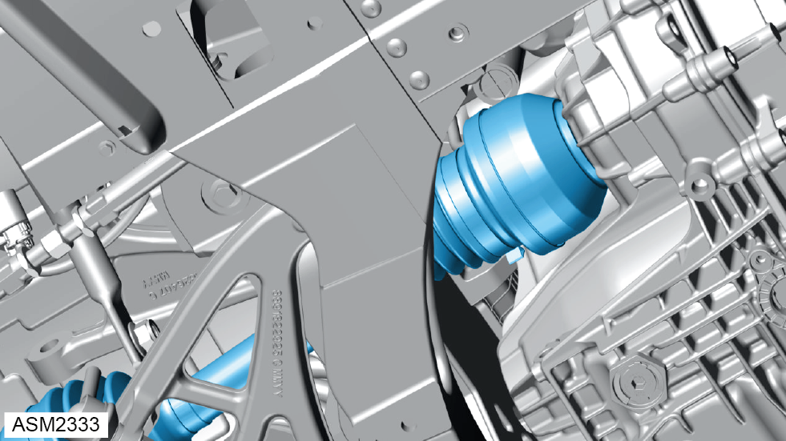
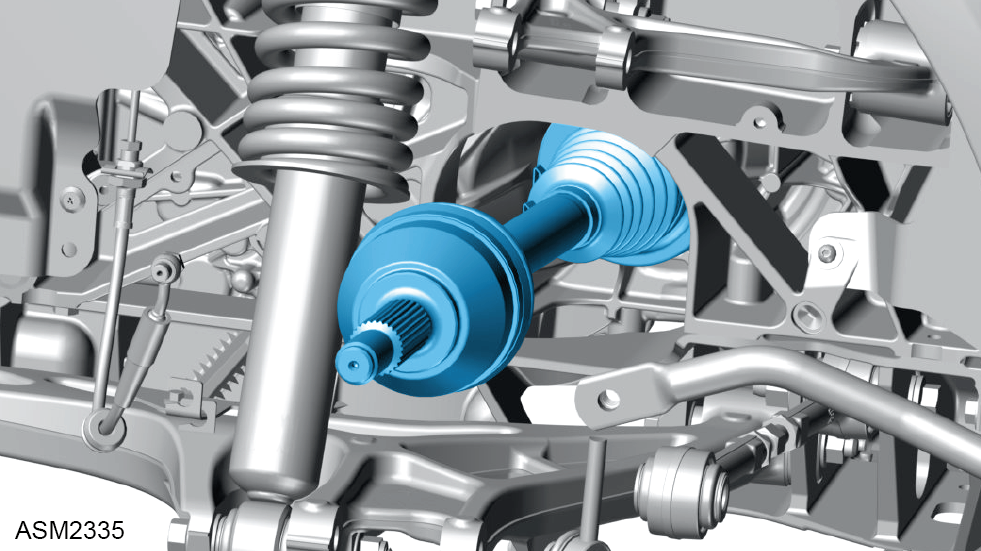
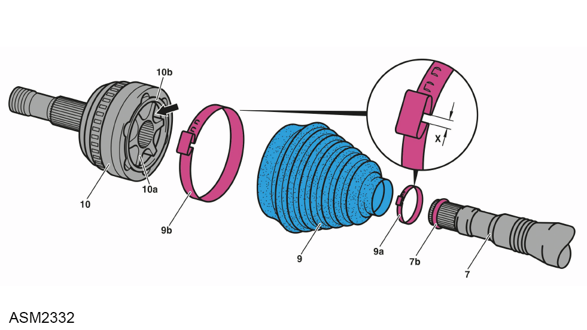

Driveshaft Assembly - Left Side - 4 Cylinder
Print
Operation Code: 47.15.01-02
Important Information
 WARNING: Transmission oil is a toxic substance and can be lethal if ingested. Wear protective gloves, protective clothing and safety glasses.
WARNING: Transmission oil is a toxic substance and can be lethal if ingested. Wear protective gloves, protective clothing and safety glasses.
Removal
- Remove rear undertray. Refer to procedure.
- Remove left side rear hub carrier. Refer to procedure.

- Release driveshaft from transmission.
 CAUTION: Take care not to damage the transmission oil seal to prevent leaks.
CAUTION: Take care not to damage the transmission oil seal to prevent leaks.
NOTE: Use a suitable container to collect any transmission oil.

- Remove driveshaft.
Do not carry out further disassembly if removing for access only.
- Using a suitable tool, release clamps (2 and 4) and slide gaiter (3) along driveshaft (1).
CAUTION: Take care not to damage the gaiter if it is to be reused.
- Release gaiter seal (5) from joint hub (10).
- Match mark joint hub, ball cage (8), constant velocity (CV) joint hub (9) and driveshaft.
- Remove joint hub.
- Remove balls from ball cage.
- Remove CV joint hub from driveshaft using a suitable drift.
NOTE: Remove and discard sealing ring (6).
- Remove and discard snap ring (7).
- Remove ball cage from CV joint hub.
- Remove gaiter seal, gaiter and clamps from driveshaft.

- Using a suitable tool, release clamps (9a and 9b) and slide gaiter (9) along driveshaft (7).
- Match mark CV joint (10), joint hub (10a) and driveshaft (7).
- Remove CV joint and joint hub from driveshaft using a suitable drift.
- Remove gaiter and clamps from driveshaft.
- Remove and discard snap ring (7b).
Installation
- Installation is the reverse of removal procedure except for the following:
- Clean CV joint, joint hub, ball cage, CV joint hub and balls and inspect for wear. Renew if necessary.
WARNING: Only use cleaning agents and solvents in a well ventilated area.
- Insert balls into ball cage and grease with long-life grease (NLGI grade 2).
- Renew discarded sealing ring of joint hub.
NOTE: Do not apply grease or oil to sealing ring otherwise gaiter seal may turn on joint hub.
- Pack gaiters and joint hubs with remaining long-life grease (NLGI grade 2).
- Renew discarded clamps.
NOTE: Dimension "X" must be ≤ 2 mm otherwise leaks may occur at gaiter.
- Renew discarded snap rings.
- Apply grease to inboard driveshaft splines before installation.
CAUTION: Take care when installing driveshaft into gearbox to not damage the snap ring.
NOTE: Applying grease will keep the snap ring in place, aiding in installation.
- Check transmission oil level. Refer to procedure.